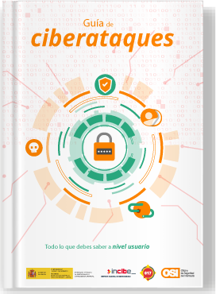
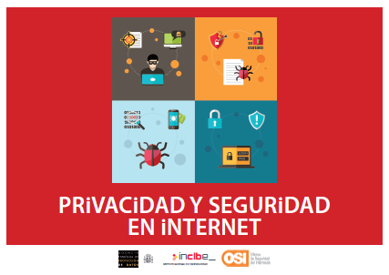

Guies de ciberseguretat¶
Diverses guies sobre ciberseguretat.
Guia de Cyber Attack¶
Guia Cyberat a nivell d’usuari.

- Autor de la Guia
- Aquesta publicació pertany a l’Institut Nacional de Ciberseguretat (Inciu) i al servei de l’Oficina de Seguretat d’Internet (OSI).
- Llocs web
- Llicenciar
- Creative Commons Reconeixement-Comerç-Compartici-Compartyrrigual 4.0 Internacional <https://creativecommons.org/licenses/by-nc-sa/4.0/> `` `` `` `` `` `` `` ``
Guia de privadesa i seguretat a Internet¶

Guia de privadesa i seguretat a Internet.
- Autor de la Guia
- Es tracta d’una publicació conjunta pertany a l’agència espanyola per a la protecció de dades (AEPD) i a l’Institut Nacional de Ciberseguretat (Inciu).
- Llicenciar
- `Creative Commons Reconeixement-Comercial-Compartici-Compartyrrigual 3.0 Internacional <https://creativecommons.org/licenses/by-nc-sa/3.0/>
- Llocs web
- `Agència espanyola per a la protecció de dades (AEPD) <https://www.aepd.es/es/prensa-y-comunicacion/blog/la-guia-de-privecity
- Internet Safety Office (OSI)